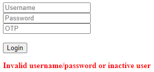

Login System Tutorial Part 4 - Login Access Debugging¶
In this tutorial, we will discuss about checking the status of the user login with and without OTP validation.
Go to login.go and assign the login validation if the credentials are invalid or does not meet the expected condition.
// If the request method is POST
if r.Method == "POST" {
// Some codes
// Login2FA login using username, password and otp for users with OTPRequired = true.
session := uadmin.Login2FA(r, username, password, otp)
// ------------------- ADD THIS CODE ------------------- //
// Check whether the session returned is nil or the user is not active.
if session == nil || !session.User.Active {
// Assign the login validation here that will be used for UI displaying. ErrExists and Err fields are coming from the Context struct.
c.ErrExists = true
c.Err = "Invalid username/password or inactive user"
} else {
// Display the results
uadmin.Trail(uadmin.DEBUG, "Username and password is valid.")
}
// ---------------------------------------------------- //
}
Add an error message in login.html.
<body>
<form method="POST">
<!-- Some codes here -->
</form>
<!----------- ADD THIS CODE ----------->
{{if .ErrExists}}
<p>
<b style="color:red">{{.Err}}</b>
</p>
{{end}}
<!------------------------------------->
</body>
Now run your application and go to the login system path in the address bar (e.g. http://localhost:8080/login_system/). Assign the invalid username and password in the login form (e.g. sdfsdf, 123123). Click Login button to submit.

Result
But if you assign the valid username and password in the login form (e.g. admin, admin)

Check your terminal for the result.
[ DEBUG ] Username and password is valid.
Exit your application. Go to login.go in views folder and let’s create a validation to check if the user requires OTP for the login process.
// Check whether the session returned is nil or the user is not active.
if session == nil || !session.User.Active {
// Some codes here
} else {
// ----------------------------- ADD THIS CODE ----------------------------- //
// If the user has OTPRequired enabled, it will print the username and OTP in the terminal.
if session.PendingOTP {
uadmin.Trail(uadmin.INFO, "User: %s OTP: %s", session.User.Username, session.User.GetOTP())
}
// As long as the username and password is valid, it will create a session cookie in the browser.
cookie, _ := r.Cookie("session")
if cookie == nil {
cookie = &http.Cookie{}
}
cookie.Name = "session"
cookie.Value = session.Key
cookie.Path = "/"
cookie.SameSite = http.SameSiteStrictMode
http.SetCookie(w, cookie)
// Check for OTP
if session.PendingOTP {
// After the user enters a valid username and password in the first part of the form, these values will be used on the second part in the UI where the OTP input field will be displayed afterwards.
c.Username = username
c.Password = password
c.OTPRequired = true
} else {
uadmin.Trail(uadmin.DEBUG, "Your login credentials are valid.")
}
// ------------------------------------------------------------------------- //
}
Add validation in login.html to say that OTP input field should be displayed if the user has OTPRequired enabled in the database and after the user enters a valid username and password.
<form method="POST">
<!-- ADD THIS CODE : This code already exists before but we add the value
attributes in username and password input tags. -->
<input type="text" name="username" placeholder="Username" value="{{.Username}}"><br>
<input type="password" name="password" placeholder="Password" value="{{.Password}}"><br>
<!-- ADD THIS CODE : The OTP field will be displayed if the user has OTPRequired
enabled and after the user enters a valid username and password.-->
{{if .OTPRequired}}
<input type="text" name="otp" placeholder="OTP"><br>
{{end}}
<!-------------------------------------------------->
<br><button type="submit">Login</button><br>
</form>
Run your application and go to the admin path in the address bar (e.g. http://localhost:8080/admin/). Login using “admin” as username and password.

Click on “USERS”.

Click System Admin.

Scroll down the form then activate OTP Required on that user.

Result

Click the blue person icon on the top right corner then select admin in order to visit the profile page.

Scroll down the form. There is a 2FA image to fetch the QR code which is typically used for storing URLs or other information for reading by the camera on a smartphone. In order to do that, you can use Google Authenticator (Android, iOS). It is a software-based authenticator that implements two-step verification services using the Time-based One-time Password Algorithm and HMAC-based One-time Password algorithm, for authenticating users of mobile applications by Google. 1

If there is a problem, you may go to your terminal and check the OTP verification code for login.
Now go to the login system path in the address bar (e.g. http://localhost:8080/login_system/). Assign the username and password first. Click Login button to submit.

After the system validates the username and password, it will display the OTP input field in the UI. Check your terminal or Google Authenticator for the OTP (e.g. 123456).

Check your terminal for the result.
[ DEBUG ] Your login credentials are valid.
You can also see that the session cookie is created in your browser.

Click here to view our progress so far.
In the next part, we will talk about accessing the home page after the user logins an account with valid credentials.
Reference¶
- 1
No author (28 May 2019). Google Authenticator. Retrieved from https://en.wikipedia.org/wiki/Google_Authenticator